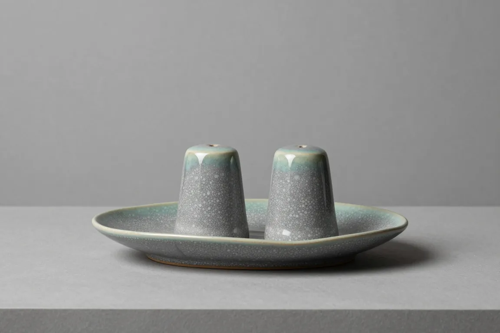

ceramics · 1939–1960 · also: Soft modern dinnerware, American Modern, Biomorphic tableware
Soft, curved dinnerware for the postwar home. The designers shape plates, shakers and pitchers like pebbles and leaves, and glaze them in muted, matt or satin colours of the earth.

Core thesis
A table set is easy to live with when its forms flow like pebbles and its colours are the quiet colours of stone, leaf and sand.
Design principles
Shape each piece in a soft curve, like a pebble, a leaf or a bird, with no sharp corner.
Make the rim a free curve, and let the foot rise from the same line.
Glaze in a muted, matt or satin colour: grey, sand, sea green, chartreuse or cinnamon.
Let the glaze pool a little in the curves, so that the tone changes.
Design the service as a family: each piece shares one curve in its handle and its lip.
Pair the shakers as a mated couple, with one curve that fits the other.
Test each piece in the hand; the grip and the balance decide the shape.